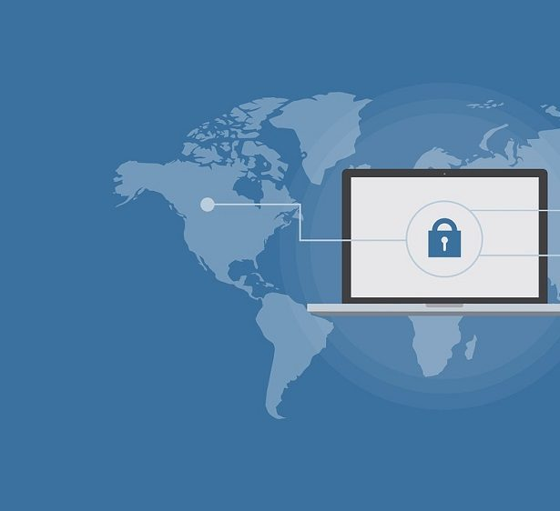
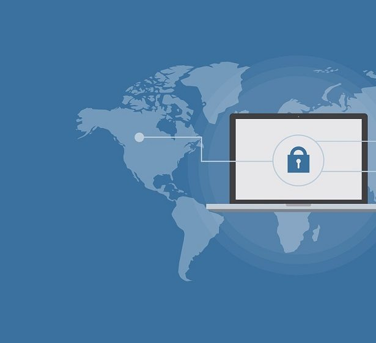

Verden åbner mere og mere op, og det betyder, at vi igen kan se frem til at skulle besøge udenlandske himmelstrøg og nye, eksotiske, spændende rejsemål. Flere og flere danskere er nemlig vaccinerede mod coronavirus, og det giver nye muligheder. Samtidigt har flere og flere lande fundet et mere acceptabelt leje for, hvordan man dels håndterer smittespredningen og pandemien, ligesom mange lande melder om lave smittetal.
Tilgå din netbank sikkert med en VPN
VPN er en forkortelse for Virtuelt Privat Netværk, og kort fortalt er en VPN en sikker punkt-til punkt-forbindelse, som du kan oprette gennem et andet datanetværk, når du er i udlandet. Mange danskere bryder sig ikke om at tilgå hverken netbank, e-boks eller andre hjemmesider med personfølsomme oplysninger, når de befinder sig i udlandet.
Det skyldes, at vi ofte kun har adgang til internettet på det hotel, vi bor på, eller på en lokal restaurant, der tilbyder gratis Wi-Fi. Mange danskere stoler med rette ikke på, at disse internetforbindelser nødvendigvis er sikre, og derfor kan vi let føle os afskåret fra mange af de værktøjer og oplysninger, som vi har adgang til herhjemme, og som vi bruger på daglig basis.
Vær anonym på internettet med en VPN
Med en VPN krypterer og anonymiserer du din trafik på internettet, og det gør det sikkert for dig at tilgå hjemmesider med personfølsomme oplysninger, når du er i udlandet. Derfor er det værd at undersøge dine muligheder for den bedste VPN, inden du rejser, ligesom det er en god idé, at du sætter dig ind i, hvad en VPN er og kan.
Man ved aldrig, hvornår den næste rejse banker på døren, eller hvornår man får brug for at tilgå personfølsomme hjemmesider i udlandet. Behovet kan opstå, uden at du på forhånd vidste det eller havde planlagt det.
Mange heldige, vaccinerede for COVID-19 danskere kan igen se frem til at skulle ud i verden og opleve noget af alt det, vi alle har savnet de seneste mange måneder. Dog skal de også til at tage stilling til nogle af alle de problemer, vi ikke har beskæftiget os så meget med på det sidste, og som vi det seneste år har oplevet som deciderede luksusproblemer.
Det gælder blandt andet, hvordan man trygt og sikkert kan tilgå sin netbank i udlandet, om det er med en betalt VPN-tjeneste som er noget mere sikker, end en gratis VPN. Det er altid vigtigt at have styr på finanserne, og det gælder ikke mindst, når man befinder sig i udlandet.
Hvor mange danskere kan se frem til at rejse til sommer?
Det er endnu uvist, hvor mange danskere der kan se frem til at skulle lufte badetøjet, strandhåndklæderne og solcremen på en strand i udlandet til somme. Den danske vaccinationsplan er blevet udskudt flere gange, siden man første gang meldte en slutdato ud.
Senest er vaccinationsplanen skredet med flere uger, efter Danmark har droppet både AstraZeneca-vaccinen og Johnson & Johnson-vaccinen i det danske vaccinationsprogram. Det har været til stor frustration for mange danskere, og det betyder også, at man antager, at alle danskere først vil være blevet tilbudt en vaccine, når vi når på den anden side af sommeren.
Det betyder også, at det med stor sandsynlighed ikke bliver alle vaccinationsgrupper, der kan glæde sig til en mere normaliseret sommer med udenlandsrejser, som vi kendte dem før den langvarige og omfattende pandemi.


 
